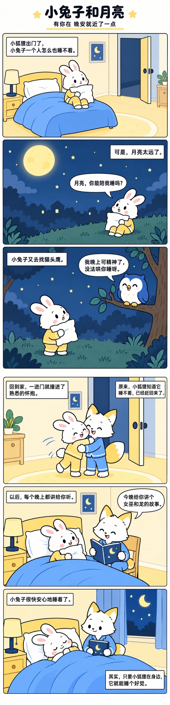

梦玉的能力岛
故事条漫
网站
公众号
条漫
配色
会员
菜单
← 返回条漫
—
升级会员
编辑内容
保存项目
导出内容
制作包
配置 JSON
下载风格包
内容与脚本
完整故事
正在确认账户…
登录
登录后继续
重试
载入当前账户
返回条漫
扁平编辑插画案例
完整故事案例 · 750px母版
完整故事
朋友圈分段
适配
原尺寸
放大

这是此风格的完整故事案例，不是当前输入内容的生成结果。可向下滚动阅读；下载包保留已确认的风格规则与参考，指导外部 AI 按你的内容制作 750px 纵向长漫。
750px · 扁平编辑插画真实案例
完整长图
本机旧草稿
旧版本没有账户归属。确认是你的草稿后再导入；原记录保留，并转换为条漫脚本原型。
这是我的旧草稿
确认并导入